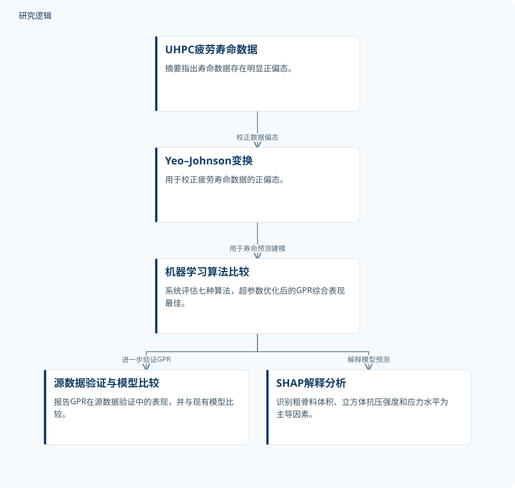

摘要解读
结合SHAP解释与Yeo–Johnson变换的超高性能混凝土疲劳寿命高斯过程回归预测
Fatigue Life Prediction of Ultrahigh Performance Concrete Using Gaussian Process Regression With SHAP Interpretation and Yeo–Johnson Transformation
解读更新 2026-11-10 09:59 · 依据公开摘要整理，未核验全文细节
超高性能混凝土（UHPC）的疲劳寿命受多个参数共同影响，非线性关系使准确预测成为难题。这项研究将数据变换、机器学习比较与模型解释结合起来，值得关注的不只是预测精度，还有高精度结果的验证边界及其影响因素。
文章目录
UHPC疲劳寿命：多参数非线性带来的预测挑战
准确预测UHPC疲劳寿命，对结构安全与耐久性评估具有重要意义。摘要指出，其困难在于复杂的多参数依赖和非线性行为。因此，研究不仅需要建立寿命预测模型，也需要解释哪些输入因素主导了模型预测。
本文选择将机器学习与可解释性分析结合。以下解读仅依据完整摘要，重点梳理数据处理、模型比较及解释结果，不将摘要所述工程评估框架等同于已经完成实际结构应用验证。
先处理寿命数据偏态，再比较预测算法
针对UHPC疲劳寿命数据明显的正偏态，研究采用Yeo–Johnson变换进行校正；随后系统评估七种机器学习算法，并对高斯过程回归（GPR）进行超参数优化。摘要还报告了与源数据的验证，以及同现有模型的性能比较。
在预测之外，研究采用Shapley Additive exPlanations（SHAP）分析识别主要影响因素。这里的解释对象是模型预测：它帮助说明不同输入对预测结果的贡献，但不应直接理解为材料疲劳机制的因果证明。
依据摘要整理的UHPC疲劳寿命研究流程


概括摘要明确报告的数据处理、模型比较、验证与解释环节，不表示论文原图或完整实验配置。
下载 SVG图示关系说明
实线表示相邻阶段的信息流，虚线表示跨阶段联系或反馈。
UHPC疲劳寿命数据 → Yeo–Johnson变换：校正数据偏态；Yeo–Johnson变换 → 机器学习算法比较：用于寿命预测建模；机器学习算法比较 → 源数据验证与模型比较：进一步验证GPR；机器学习算法比较 → SHAP解释分析：解释模型预测
GPR表现最佳，预测贡献集中于三类因素
摘要报告，经过超参数优化的GPR综合表现最佳，R² = 0.9931，MAPE = 1.410%。在与源数据的验证中，GPR的R²为0.939，高于现有模型的R² = 0.665。这两组结果对应不同的报告环节，不宜混为同一验证结果。
SHAP分析识别出的主导因素为粗骨料体积、立方体抗压强度和应力水平，合计解释超过85%的预测变异。该结果说明模型预测主要受这些变量影响，但摘要没有给出其作用方向、阈值或相互作用细节。
高精度指标之外，验证范围仍需进一步核对
摘要未报告样本量、数据来源构成、训练与测试划分方式，以及材料和加载条件的覆盖范围；其余算法的配置、现有对比模型的具体形式也未展开。因此，仅凭摘要无法判断比较的完整条件，也不能确认源数据验证是否属于独立外部验证。
这些信息缺口不代表论文没有开展相应工作，而是当前材料不足以核实。同样，摘要未提供预测不确定性与工程现场验证的细节，尚不能据此推断模型在不同配合比或加载条件下的适用程度。
阅读启发：将预测精度与适用边界一起阅读
阅读启发：对结构疲劳与可靠性研究，本文提示可以同时关注数据分布处理、算法比较和预测解释。进一步阅读时，值得核对Yeo–Johnson变换如何纳入建模流程、源数据验证如何组织，以及SHAP识别的主导因素在不同数据条件下是否保持一致；这些问题比直接将高R²外推为工程可靠性保证更有价值。
以上为本站阅读启发与建议，不是论文已验证的结论。